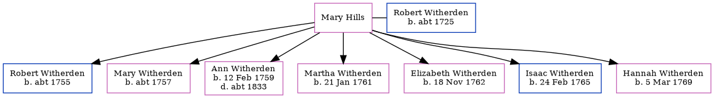

Mary Witherden (née Hills)
[ Home ] | [ Calendar ] | [ Surnames Index ] | [ Errors ] | [ Family History ]Mary Hills was the 5 times great-grandmother of Nigel Horne and married Robert Witherden (with whom she had 7 children: Robert, Mary, Ann, Martha, Elizabeth, Isaac and Hannah) in St Peters, Thanet, Kent, England on 22 Apr 1755.
Children
- Robert was born c. 1755
- Mary was born c. 1757
- Ann was born on 12 Feb 1759
- Martha was born on 21 Jan 1761
- Elizabeth was born on 18 Nov 1762
- Isaac was born on 24 Feb 1765
- Hannah was born on 5 Mar 1769
Family Tree
Map
Generated by ged2site. Last updated on Jul 3, 2024
Known Issues
Marriage date (22 Apr 1755) has no citations